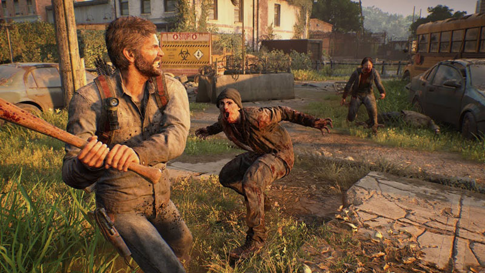
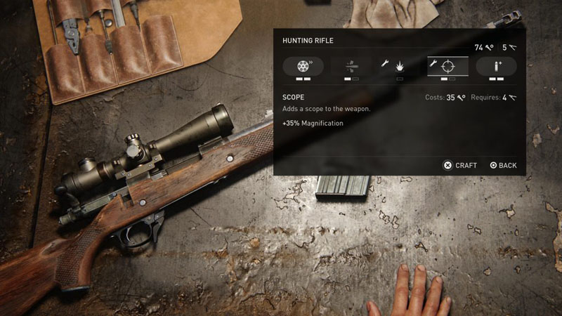

The Last of Us Part 1 posee un buen sistema de combate que incluye armas cuerpo a cuerpo. El combate a cuerpo tiene 2 variantes: Sin arma, donde usas los puños y solo puedes atacar a humanos, corredores y acechadores; y la otra variante, donde usas armas cuerpo a cuerpo improvisadas, como tuberías, palos rotos o machetes. Estas infligen mucho más daño y te permiten golpear también a los chasqueadores. Sin embargo, las armas cuerpo a cuerpo no se pueen tener de forma permanente como las armas a distancia, y una vez agarradas pueden romperse al dar unos cuantos golpes.
En el juego, el sistema de combate cuerpo a cuerpo se complementa con un buen sistema de combate a distancia, que, si bien no cuenta con muchas mecánicas particulares, tiene diferentes formas de combatir producto de las diferentes armas del juego. Las armas a distancia te permiten golpear a cualquier tipo de enemigo e infligen mucho más daño que cualquier arma cuerpo a cuerpo (para ver las armas, ir a inicio , o tocar el ícono de la casita al final de la página), aunque el ruido que producen tiende a atraer enemigos cercanos.
El sigilo es un método para vencer a tus enemigos gastando la menor cantidad de recursos posible. Puede realizarse a distancia o cuerpo a cuerpo. En el sigilo cuerpo a cuerpo se utilizan las manos para ahorcar a los infectados más débiles y a humanos, y dagas para eliminar en sigilo a los chasqueadores.
En el sigilo a distancia se emplea el arco o las bombas caseras. El arco, por su parte, mata de un fulminante flechazo silencioso a la cabeza, y puedes recuperar la flecha usada si esta no se parte al impactar con el enemigo. Por otra parte, las bombas caseras se pueden combinar con las botellas y ladrillos arrojables para así atraer a todos los enemigos a una zona donde la bomba cause el mayor efecto posible.
Es posible mejorar tus armas a distancia en bancos de mejora. Para poder mejorarlas en los bancos se necesita un material llamado partes que puede ser recolectado a lo largo del juego. Algunas de estas mejoras se desbloquean con un determinado nivel de fabricación, que sube cuando obtenemos cajas de herramientas en el mundo.
Las mejoras para armas cuerpo a cuerpo son temporales. Estas se desbloquean en un momento determinado de la historia, cuando encuentras un manual de entrenamiento. Permiten matar instantáneamente a los enemigos, aunque aún pueden romperse. Las mejoras para esta clase de armas se pueden fabricar con recursos básicos del juego, como tijeras, trapos, cinta, etc.
A lo largo del juego, se pueden obtener unas pastillas que sirven para mejorar las habilidades y atributos de tu personaje, como la salud, el balanceo de armas, o la cantidad de usos de las dagas. Estas mejoras son aplicables para los dos personajes jugables del juego, Joel y Ellie.
La fabricación o crafteo es otra mecánica fundamental en el juego. Nos permite crear objetos de utilidad usando materiales básicos, a saber: